In Chapter 5, we briefly noted that in practice, one
might wish to control the relative weights of the separate components
of the feature vector 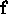 (Equation 5.2).
Weighting the camera pose, and/or image-position can adjust the
extents to which we favour a priori estimates over current
sensor observations, or the extent to which we favour image
geometry over appearance. One can imagine a variety of
situations where one choice might be more practical than another.
Formally, let us redefine the feature vector f of a candidate
landmark to be
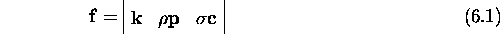
where, as in equation 5.2, is the
principal components encoding of the intensity distribution of the
candidate relative to the set of tracked landmark templates,
is the camera pose of the candidate, is
the image position of the candidate and the notation
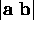 represents the concatenation of the
vectors 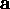 and . The scaling parameters,
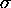 and 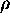, represent degree to which the camera pose and
image-position are weighted in the feature vector.
Figure 6.4 depicts the effects of varying and for the training set of Scene I. Each point on the surface represents a measure of the goodness of results in terms of the mean magnitude in estimation error over the twenty test cases, plotted as a function of the scale parameters and . The scale parameters are varied by powers of ten. The results clearly indicate a large portion of parameter space for which the accuracy is very good. The degradation of results below 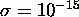 in the corners of the plot can be attributed to limits in machine precision. The sharp rise above 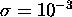 corresponds to the increased significance of the a priori estimate (the rise forms a plateau at about 4cm). The sharp change in accuracy at this point indicates that controlling the contribution of the a priori estimate by controlling could pose difficulties. The gentle slope in the foreground represents the transition between primarily appearance-based estimation to primarily geometry-based estimation, as varies from about 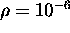 to 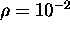. In the case of this scene, it is apparent that geometry-based estimation performs slightly better than appearance-based estimation.
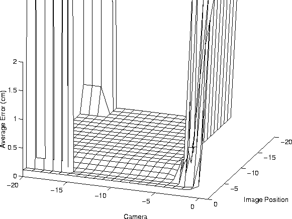
Figure 6.4: Parameter variation
results for Scene I.
The surface plotted is the mean error over twenty test cases for the
corresponding values of 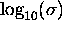 (the axis labelled as Camera)
and 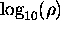 (the axis labelled as Image Position). The sharp
rise on the right side of the plot forms a constant plateau at about
4.0cm. Note the gentle slope in the foreground, which marks the
transition between appearance-based and geometry-based pose
estimation.